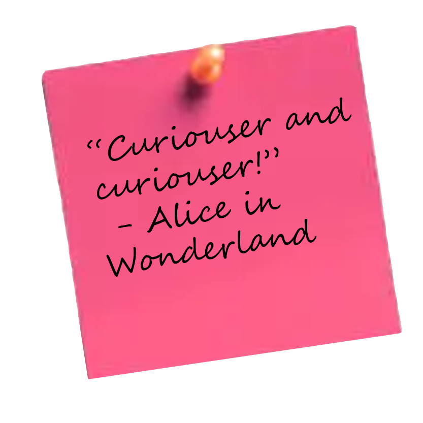
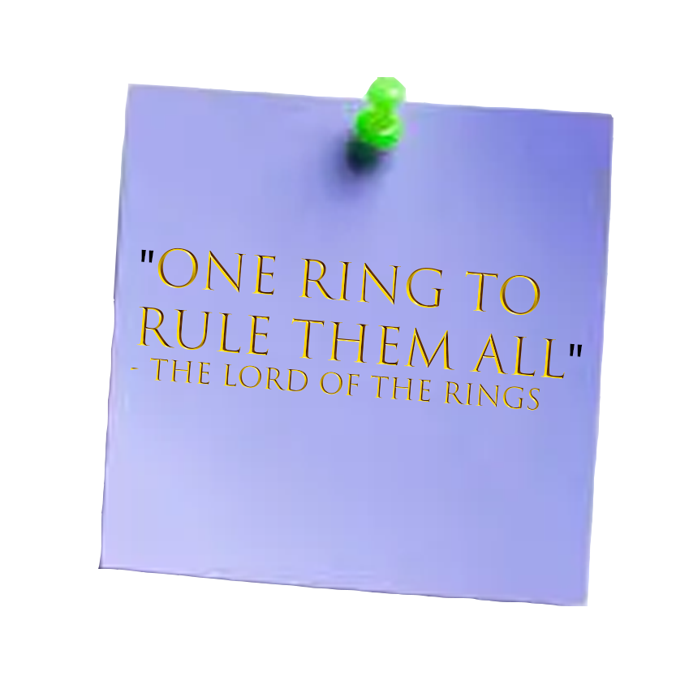
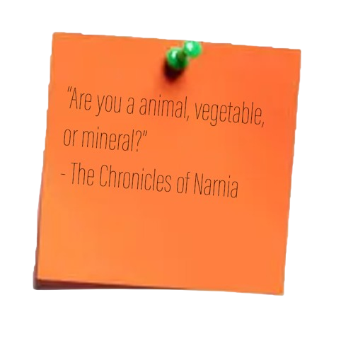
Welcome to FindABook! A website that helps avid New Zealand readers find places to borrow or purchase books wherever they are in the country. Use the A - Z list of NZ BookSellors Bookstores or the pages on New Zealand public libraries by region to further your book finding knowledge!
Classic Reads

The Chronicles of Narnia: The Lion, The Witch and The Wardrobe by C.S.Lewis
Genre: Fantasy
Overview: The Lion, the Witch, and the Wardrobe follows the adventures of the Pevensie children, who, during World War 2 are sent into the faraway countryside to stay with the Professor in a big Victorian style house. During a game of hide and seek, Lucy, the youngest Pevensie child discovers the enchanted land of Narnia within a wardrobe. The Pevensie children adventure into Narnia only to discover that it is cursed to live in eternal winter by the White Witch. Together the Pevensie Children along with the creatures of Narnia must fight to end the Witch’s reign.
Other Books in the Same Series: The Magician’s Nephew | The Lion, the Witch, and the Wardrobe | The Horse and his Boy | Prince Caspian | Voyage of the Dawn Treader | The Silver Chair | The Last Battle
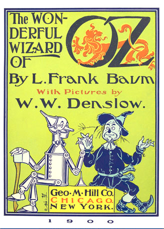
The Wizard of Oz by L. Frank Baum
Genre: Fantasy
Overview: The Wizard of Oz follows Dorothy - a girl transported to the magical land of Oz by a tornado - as she adventures to find her way home. She travels along the yellow brick road to the Emerald City to find the infamous Wizard of Oz, who, she believes, has the power to send her home. Along the way Dorothy encounters others such as, The Tinman who longs for a heart, the Cowardly Lion who hopes for courage and the Scarecrow who wishes for a brain. Together they make their way to the Emerald city on a journey of self discovery and friendship.
Other Books in the Same Series: The Wonderful Wizard of Oz | The Marvelous Land of Oz | Ozma of Oz | Dorothy and the Wizard in Oz | The Road to Oz | The Emerald City of Oz | The Patchwork Girl of Oz | Tik-Tok of Oz | The Scarecrow of Oz | Rinkitink in Oz | The Lost Princess of Oz | The Tin Woodman of Oz | The Magic of Oz | Glinda of Oz

Charlotte's Web by E. B. White
Genre: Fantasy
Overview: ‘I don’t want to die! Save me, somebody! Save me!’
“One spring morning a little girl called Fern rescues a runt and names him Wilbur. But then Wilbur is sent to live on a farm where he meets Charlotte, a beautiful large grey spider. They become best friends and, when Wilbur is faced with the usual fate of nice fat little pigs, Charlotte must find a clever way to save him.”
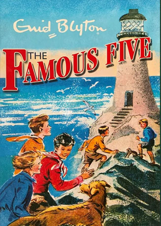
The Famous Five by Enid Blyton
Genre: Adventure and Mystery
Overview: ‘There was something else out on the sea - something dark that seemed to lurch out of the waves… What could it be?’
”Julian, Dick and Anne are spending the holidays with their cousin George and her dog, Timmy. Exploring Kirrin Island, they make a thrilling discovery, which leads them deep into the dungeons of Kirrin Castle. Who - and what - will they find there?”
Other Books in the Same Series: Five on a Treasure Island | Five Go Adventuring Again | Five Run Away | Five Go to Smuggler's Top | Five Go Off in a Caravan | Five on Kirrin Island Again | Five Go Off to Camp | Five Get into Trouble | Five Fall into Adventure | Five on a Hike Together | Five Have a Wonderful Time | Five Go Down to the Sea | Five Go to Mystery Moor | Five Have Plenty of Fun | Five on a Secret Trail | Five Go to Billycock Hill | Get into a Fix | Five on Finniston Farm | Five Go to Demon's Rocks | Five Have a Mystery to Solve | Five Are Together Again
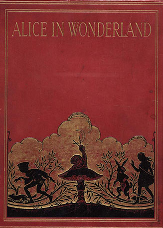
Alice's Adventures in Wonderland by Lewis Carroll
Genre: Fantasy and Adventure
Overview: ‘Alice was beginning to get very tired of sitting by her sister on the bank, and of having nothing to do: once or twice she had peeped into the book her sister was reading, but it had no pictures or conversations in it, ‘and what is the use of a book,’ thought Alice, ‘without pictures or conversations?’
”So begins the tale of Alice, following a curious White Rabbit down a rabbit-hole and falling into Wonderland. A fantastical place, where nothing is quite as it seems: animals talk, nonsensical characters confuse, Mad Hatter’s throw tea parties and the Queen plays croquet. Alice’s attempt to find her way home becomes increasingly bizarre, infuriating and amazing in turn. A beloved classic, Alice’s Adventures in Wonderland has continued to delight readers, young and old for over a century.”
Other Books in the Same Series: Alice’s Adventures in Wonderland | Through the Looking Glass
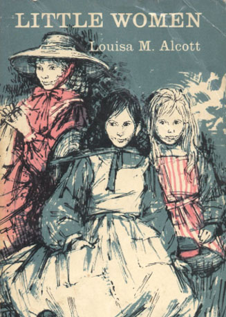
Little Women by Louisa May Alcott
Genre: Realistic Fiction
Overview: "In picturesque nineteenth-century New England, tomboyish Jo, beautiful Meg, fragile Beth, and romantic Amy are responsible for keeping a home while their father is off to war. At the same time, they must come to terms with their individual personalities - and make the transition from girlhood to womanhood. It can all be quite a challenge. But the March sisters, however different, are nurtured by wise and beloved Marmee and bound by their love for one another and the feminine strength they share. Readers of all ages have fallen instantly in love with Little Women. The story transcends time - making this novel endure as a classic piece of American literature that has captivated generations of readers with its charm, innocence, and wistful insights.”
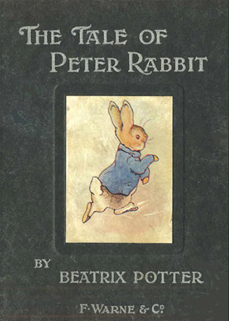
Peter Rabbit by Beatrix Potter
Genre: Picture Book
Overview: ‘Once upon a time there were four little Rabbits, and their names were - Flopsy, Mopsy, Cotton-tail and Peter.’
”Join the mischievous bunny, Peter Rabbit, as he explores Mr. McGregor’s garden, finds a heap of trouble and learns many valuable lessons along the way.”
Other Books in the Same Series: The Tale of Peter Rabbit | The Tale of Squirrel Nutkin | The Tailor of Gloucester | The Tale of Benjamin Bunny | The Tale of Two Bad Mice | The Tale of Mrs. Tiggy-Winkle | The Tale of The Pie and the Patty-Pan | The Tale of Mr. Jeremy Fisher | The Story of a Fierce Bad Rabbit | The Story of Miss Moppet | The Tale of Tom Kitten | The Tale of Jemima Puddle-Duck | The Tale of Samuel Whiskers | The Tale of the Flopsy Bunnies | The Tale of Ginger and Pickles | The Tale of Mrs. Tittlemouse | The Tale of Timmy Tiptoes | The Tale of Mr. Tod | The Tale of Pigling Bland | Appley Dapply's Nursery Rhymes | The Tale of Johnny Town-Mouse | Cecily Parsley's Nursery Rhymes | The Tale of Little Pig Robinson
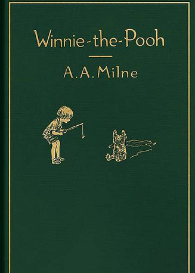
Winnie the Pooh by A. A. Milne
Genre: Short Stories
Overview: "The short stories in "Winnie the Pooh” revolve around Christopher Robin’s teddy bear called Winnie the Pooh. In the book’s ten chapters, the many exploits of Pooh Bear and Piglet, Kanga and Baby Roo, Owl, Rabbit, and the perpetually miserable Eeyore are described. Children will be enchanted by the tales of Pooh and friends, whether they are about Eeyoure’s birthday, encountering a “Heffalump,” Pooh Bear’s fruitless attempts to climb the tree to obtain the honey, or even going on an important “expotition” to the North Pole. The book’s appeal is enhanced by its original illustrations, making it a timeless classic for children."
Other Books in the Same Series: When We Were Very Young | Winnie the Pooh | Now We Are Six | The House at Pooh Corner

Anne of Green Gables by L. M. Montgomery
Genre: Realistic Fiction
Overview: ‘Did you ever suppose you’d see the day when you’d be adopting an orphan girl?’ said Marilla Cuthbert to her brother. ‘Goodness only knows what will come of it.’
"When Anne Shirley ‘erupts’ into their lives, the Cuthberts little guess how fond they will become of the skinny, red-haired orphan. Both entertained and exasperated by her constant chatter and imaginings, they soon find it hard to remember what Green Gables was like without its irrepressible adopted daughter."
Other Books in the Same Series: Anne of Green Gables | Anne of Avonlea | Anne of the Island | Anne of Windy Poplars | Anne's House of Dreams | Anne of Ingleside | Rainbow Valley | Rilla of Ingleside
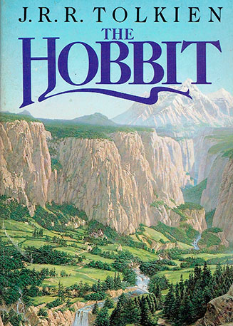
The Hobbit by J. R. R. Tolkien
Genre: Fantasy
Overview: “If you care for journeys there and back, out of the comfortable Western world, over the edge of the Wild,
and home again, and take an interest in a humble hero (blessed with a little wisdom and a little courage and considerable good luck),
here is a record of such a journey and such a traveler.
“For Mr. Bilbo Baggins visited various notable persons; conversed with the dragon Smaug the Magnificent; and was present,
rather unwillingly, at the Battle of the Five Armies. This is all the more remarkable, since he was a hobbit. Hobbits have
hitherto been passed over in history and legend, perhaps because they as a rule preferred comfort to excitement. But this account,
based on his personal memoirs, of the one exciting year in the otherwise quiet life of Mr. Baggins will give you a fair idea of the
estimable people now (it is said) becoming rather rare. They do not like noise.”
Other Books in the Same Series: The Hobbit | The Fellowship of the Ring | The Two Towers | The Return of the King
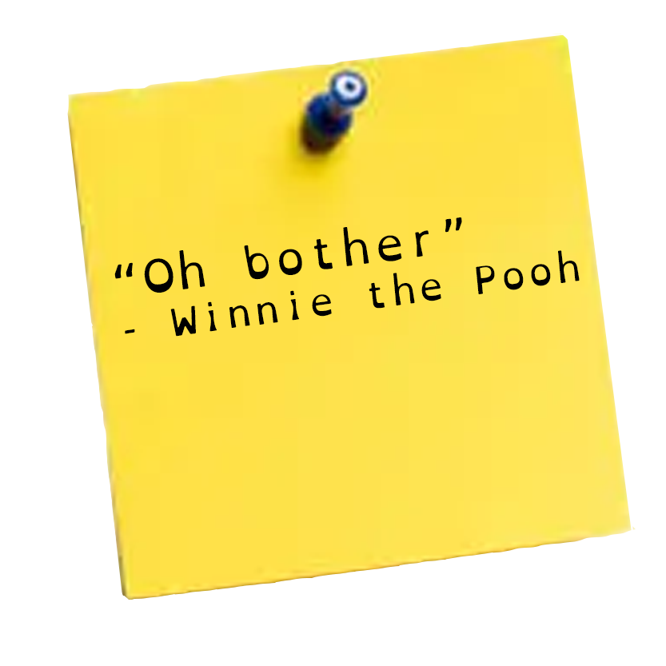
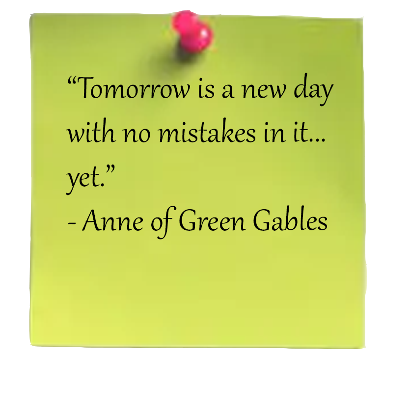